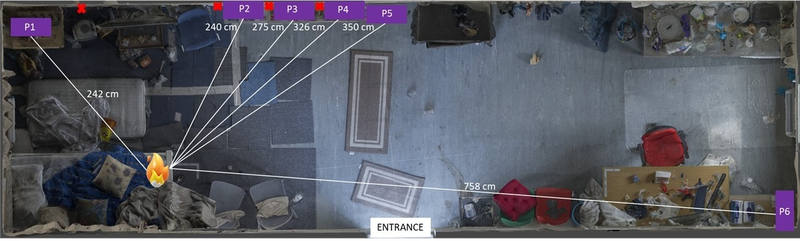

Fire Scene 1: Brigid
Interactive 3D reconstruction of the fire scene Brigid, post-burn.
Figure 1: Pre-burn isometric birds eye view of the Brigid fire scene (3D reconstructed). Samples location: █, Heat sensors: ❌
Figure 2: Sample view of the Brigid fire scene pre-burn showing the height of each set of samples from the floor.
Fire Scene 2: Kelpie
Interactive 3D reconstruction of the fire scene Kelpie, post-burn.

Figure 3: Pre-burn isometric birds eye view of the Kelpie fire scene (3D reconstructed). Samples location: █, Heat sensors: ❌
Figure 4: Sample view of the Kelpie fire scene pre-burn showing the height of each set of samples from the floor.